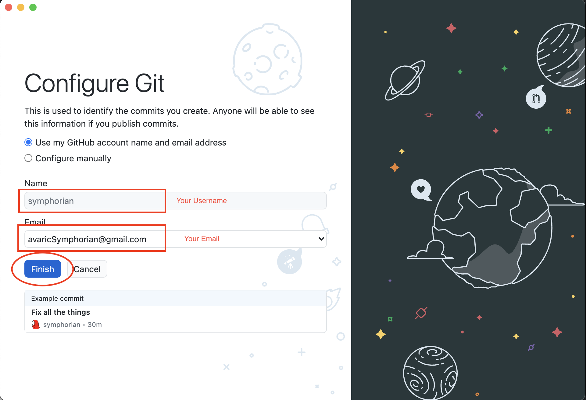
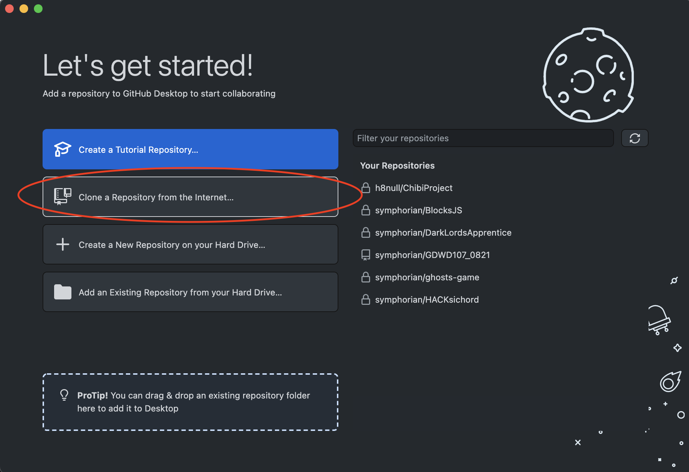
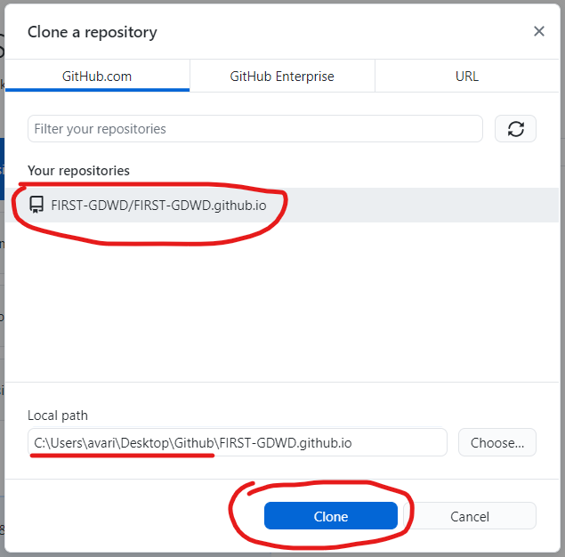

If you haven't already, download and install GitHub Desktop from the following site: https://desktop.github.com/

Here's the page you will see when it redirects you to Github to authenticate yourself.

On the Configure Git, select the "Use my Github account name and email address".


